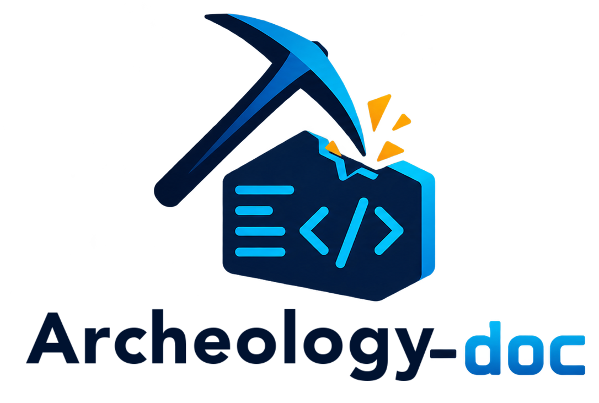
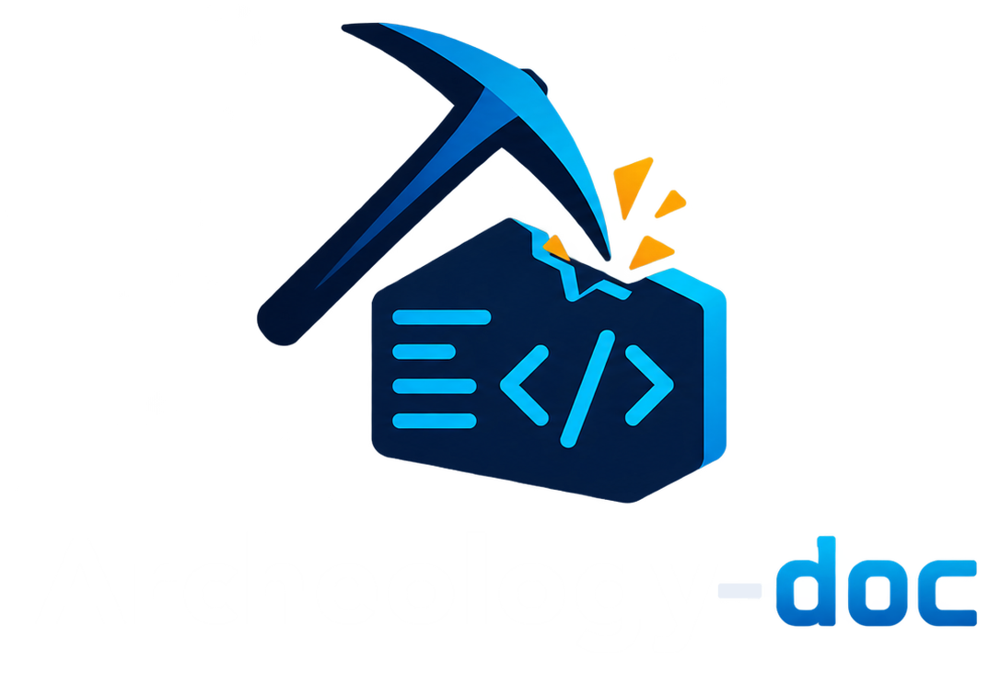

🧭
Mapa del sistema
Módulos, funcionalidades, glosario y decisiones en Markdown plano, navegable en Obsidian, VitePress o GitHub.


CLI open source · Rust · local-first
archeology-doc (adoc) inspecciona proyectos nuevos o legacy y, con el
agente de IA que ya usas, genera una base de conocimiento navegable, documentación, hallazgos y
contexto para agentes. Cada afirmación cita su fuente ruta:línea.
$ curl -fsSL https://tu-sitio/download/install.sh | shMódulos, funcionalidades, glosario y decisiones en Markdown plano, navegable en Obsidian, VitePress o GitHub.
Hallazgos por severidad: documentación desactualizada, reglas duplicadas, configuración en conflicto, código muerto.
Funcionalidades ↔ tests, escenarios cubiertos y faltantes, tests desactivados o vacíos.
AGENTS.md, memoria persistente y skills: cada sesión de IA empieza sabiendo qué hay y dónde.
Cumplimiento de requisitos contra el código y specs base inferidas para proyectos que no las tienen.
adoc check valida evidencias, enlaces y notas desactualizadas; ideal para CI.
Lo determinista lo calcula Rust; la interpretación la hace tu agente; adoc orquesta y valida.
adoc scanInventario sin IA: lenguajes, módulos, tests, CI, historial git y OpenSpec. Respeta .gitignore y excluye secretos.
adoc planDivide el trabajo en tareas acotadas según el tamaño del proyecto: pocas tareas en uno pequeño, más en uno grande.
adoc inspectTu agente ejecuta cada tarea. Solo se marca hecha si produjo lo pedido con evidencias válidas.
adoc previewSitio con dashboard: estado, hallazgos, preguntas para el equipo y FAQ. O un reporte HTML único.
adoc syncCuando el código cambia, marca las notas afectadas como desactualizadas y reabre solo esas tareas.
Un comando según tu sistema: descarga el binario de tu plataforma, verifica su SHA-256 y lo deja en el PATH. No necesitas Rust. Node 18+ solo para el sitio VitePress y la extensión.
Terminal
$ curl -fsSL https://tu-sitio/download/install.sh | sho descarga el binario
Descargado desde el navegador, macOS lo marca en cuarentena:
xattr -d com.apple.quarantine adoc archeology-doc y muévelos a ~/.local/bin.
Con el comando de terminal no hace falta.
Terminal
$ curl -fsSL https://tu-sitio/download/install.sh | sho descarga el binario
Binarios para glibc 2.28 o superior (Debian 10, Ubuntu 18.10, RHEL 8 y posteriores).
PowerShell
> irm https://tu-sitio/download/install.ps1 | iexo descarga el binario
El instalador lo deja en %LOCALAPPDATA%\Programs\archeology-doc\bin y lo añade a tu
PATH, sin permisos de administrador. En Windows ARM64 funciona con la emulación x64.
# Necesita Rust (rustup.rs). Instala `adoc` en ~/.cargo/bin
git clone https://github.com/jsoncr/archeology-doc.git
cd archeology-doc
WEBSITE/installers/install.sh
# o directamente con cargo
cargo install --path crates/archeology-cli --lockedExtras
# Con VitePress compartido y la extensión de VS Code
curl -fsSL https://tu-sitio/download/install.sh | sh -s -- --with-vitepress --with-vscode
# Verifica requisitos: git, Node, VitePress, OpenSpec y agentes
adoc doctorSe instalan dos binarios equivalentes: adoc (corto) y archeology-doc.
Para desinstalar: adoc uninstall (con --purge borra también
~/.archeology-doc; los archivos de tus proyectos no se tocan).
| Archivo | Plataforma | Tamaño | SHA-256 |
|---|---|---|---|
Lista disponible al publicar el sitio (WEBSITE/dist.sh). | |||
Verifica una descarga con shasum -a 256 <archivo> (macOS/Linux) o
Get-FileHash <archivo> (PowerShell) y compárala con SHA256SUMS.
En la carpeta de tu proyecto:
cd mi-proyecto
adoc init # config + estructura
adoc agent use claude # o devin, codex, gemini…
adoc scan # inventario determinista
adoc plan # tareas según el tamaño
adoc inspect # el agente documenta
adoc preview # ver el resultadoadoc review | Progreso, hallazgos, funcionalidades sin tests |
adoc inspect --resume | Reintenta tareas fallidas o interrumpidas |
adoc task answer T-014 "…" | Responde a un agente que preguntó |
adoc task run T-014 -i | Sesión interactiva con el agente |
adoc ask "¿…?" | Pregunta sobre el proyecto → FAQ |
adoc sync | Detecta cambios y marca notas desactualizadas |
adoc check | Validaciones para CI |
adoc report | Reporte HTML único para compartir |
adoc projects list | Todos tus proyectos y su progreso |
Agnóstico: cambia de agente o de modelo cuando quieras. Sin CLI, exporta las tareas para hacerlas a mano.
adoc agent list # disponibles; * = activo
adoc agent use devin --model opus # agente y modelo del proyecto
adoc inspect --agent codex # solo para esta corridaTodo lo generado, a la vista mientras programas. Funciona también en Cursor, Windsurf y Devin Desktop.
cd archeology-doc/extension
npm install
npm run package
code --install-extension archeology-doc-0.1.0.vsixSolo resultados, en Markdown. El estado de trabajo vive fuera del repositorio.
mi-proyecto/
├── archeology-doc.toml # config + ID
├── AGENTS.md # contexto para agentes
├── knowledge/ # vault Obsidian
│ ├── 00-overview.md
│ ├── modules/ features/ findings/
│ ├── tests/ glossary/ faq/
│ └── memory/
├── docs/ # sitio VitePress
└── llms.txtruta:línea